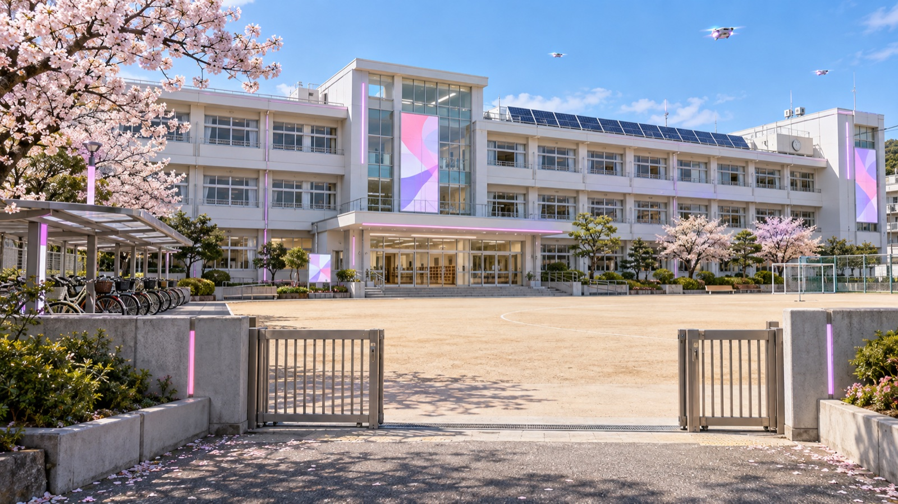
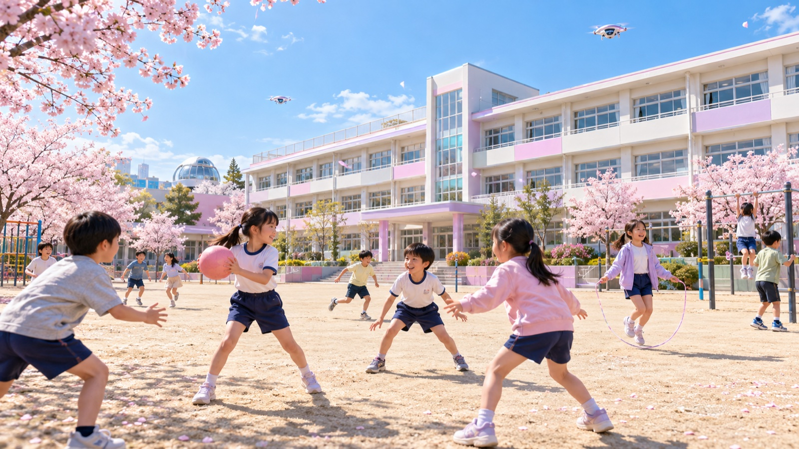

教育委員会の方針・学校の方針
擬野流市教育委員会と、市立擬野流小学校の方針です。本文はそのままコピーして使えます。
擬野流市の学校ICT
市立小学校8校・中学校4校のすべてで、同じ環境をそろえています。
1人1台の学習用端末
小学1年生から中学3年生まで、全員に貸与しています。家庭への持ち帰りを標準とし、通信環境のない家庭にはルーターを貸し出します。
「〇〇ギャル」のAIアカウント
児童生徒・教職員の生成AIアカウント名は、全員「〇〇ギャル」の愛称で統一。心理的なハードルを下げるための決まりです。
AIとの対話は「トーク」
AIとのやりとりは「相談」ではなく、盛り上がるおしゃべり。ただし、AIの答えをそのまま出さず、最後は自分の言葉で仕上げます。
個人情報・著作権・発信マナー
ここは厳格に指導します。各学期1回以上、全校で学び直す時間を設けています。
擬野流市立擬野流小学校
市の研究指定校です（架空の学校です）。


| 学校名 | 擬野流市立擬野流小学校（ぎゃるしりつ ぎゃるしょうがっこう）／Gyaru City Gyaru Elementary School |
|---|---|
| 所在地 | 〒123-4567 擬野流県擬野流市ぴえん区もりもり町1-0-1 |
| 開校 | 平成30年（令和8年度で開校9年目） |
| 規模 | 児童数318名（各学年2学級）／教職員24名 |
| 合言葉 | 毎日が盛れる学校 |
| 学校目標 | 盛れる子 つながる子 発信できる子 |
| 特色 | 毎朝の「今日のテンションチェック」、週1回の「盛れるアウトプットタイム」、月1回の「推し活タイム」 |
校長 姫野 るな／研究主任（AI活用推進リーダー） 南 ひなの（いずれも架空の人物です）
子育ての支援
申請を待つのではなく、市から案内を届ける形にしています。
- お知らせのプッシュ配信：お子さんの年齢に合わせて、受けられる支援を自動で通知します。
- 保育所の入所選考：希望と条件をもとにAIが選考案を作成し、最終判断は職員が行います。
- 健診の予約：乳幼児健診は好きな時間帯を選べます。
- 就学前相談：オンラインでも対面でも受けられます。記録は保護者もいつでも見られます。
教育長メッセージ
子どもたちが「今日、学校楽しい！」と思えること。私は、それがいちばん大事な学力のもとだと思っています。だから擬野流市では、「テンション」と「自己肯定感」を教育のいちばんの指標にしました。
デジタル機器や生成AIも、むずかしく考えません。一緒にテンション上げてくれるパイセンです。ただし、AIが出した答えをそのまま使うのはナシ。「これ、自分らしいかな？」を自分の感性でたしかめて、最後は自分の言葉で盛る。そこは、先生たちにも子どもたちにも、ずっと大切にしてほしいところです。
擬野流市教育委員会教育長 盛田 まりあ（もりた まりあ）
ご注意（このページは架空です）
このページの市名・地名・学校名・人名・数値・施策は、すべて架空です。実在の自治体、学校、人物、サービスとは関係ありません。記載の内容にもとづく手続きはできません。